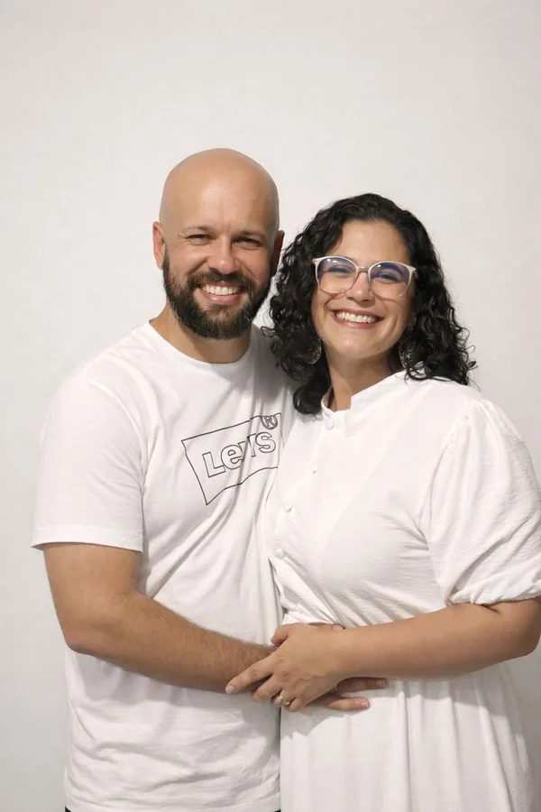
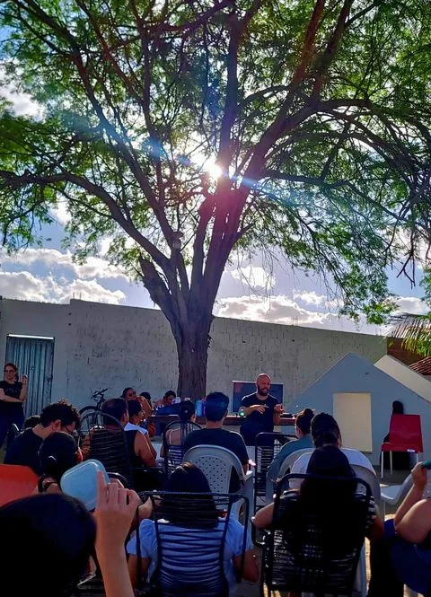
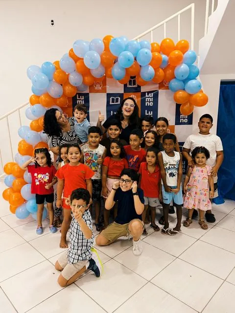

Família Nascimento · Missão em Gurinhém
Depois de 2 anos viajando toda semana, nossa família se mudou para o interior da Paraíba para servir de perto: cuidado pastoral, vida comunitária e educação cristã.
Gurinhém deixou de ser um destino semanal. Tornou-se casa.
Hoje é aqui que criamos nossos filhos, abrimos a mesa, recebemos pessoas, ensinamos a Palavra, oramos pela cidade e caminhamos com famílias que Deus colocou perto de nós.
"A missão agora tem endereço."
Wellington e Dyanna Nascimento · Gurinhém, PB
Referência pastoral: Brasil de Joelhos

Quem somos
Somos Wellington e Dyanna Nascimento, pais de Giovanni, Benjamin, José e Judah, com Isaac a caminho.
Há 15 anos nossa vida tem sido moldada pelo ministério. Pregamos, ensinamos, traduzimos, servimos em viagens missionárias e caminhamos com pessoas em restauração, no Brasil e em outros países. Já servimos em contextos muito diferentes: igrejas locais, conferências, escolas ministeriais, viagens internacionais, encontros de oração, tradução e cuidado pastoral direto.
Durante 8 desses anos, atuamos juntos no cuidado de mulheres saindo de contextos de exploração e vulnerabilidade. Essa parte da nossa história nos ensinou algo que hoje carregamos para Gurinhém: gente ferida precisa de presença, tempo, verdade e mesa.
Também caminhamos há mais de 15 anos com o Brasil de Joelhos, ministério de oração e intercessão liderado pelo nosso pastor. Nossa ida para Gurinhém não nasceu de impulso. Ela tem oração, vínculo, prestação de contas e uma história longa de serviço.
Onde estamos
Gurinhém fica a cerca de 80 km de João Pessoa. É uma cidade pequena, com recursos limitados e muitas famílias sem acesso fácil a boa educação, formação cristã profunda ou cuidado pastoral constante.
Por 2 anos, fizemos esse caminho toda semana. Mais de 120 viagens. Ida e volta. No começo, íamos para servir pontualmente. Depois, os nomes foram virando rostos conhecidos. As casas foram se abrindo. As dores deixaram de ser estatística. A cidade entrou na nossa oração diária.
Com o tempo, a decisão ficou clara. Algumas coisas precisam ser cuidadas de perto.
Uma visita abençoa. Presença forma.
Por isso, nossa família veio morar aqui. A missão agora tem endereço. Hoje Gurinhém é o lugar onde vivemos, oramos, educamos nossos filhos, pastoreamos, recebemos pessoas e trabalhamos pela formação de uma comunidade cristã saudável.
Uma missão, duas frentes
Nossa vida em Gurinhém se organiza em 2 frentes que caminham juntas.
Comunidade
Uma comunidade cristã em formação, pastoreada por nós, reunida em torno da Palavra, da mesa, da oração e da vida compartilhada. É onde acompanhamos pessoas, famílias e histórias reais, com paciência e verdade.
Educação
Um projeto de educação cristã clássica para crianças e famílias em situação de vulnerabilidade na região. Nasceu do desejo de oferecer alfabetização, literatura clássica, formação cristã e beleza para crianças que muitas vezes crescem sem acesso a essas coisas.
As 2 frentes têm formas diferentes, mas dependem da mesma base: nossa família permanecendo aqui com estabilidade.

A comunidade
Uma comunidade em formação
A Igreja Comum nasceu de Atos 2.44: "tinham tudo em comum". Hoje, cerca de 35 pessoas caminham conosco em Gurinhém. Nos reunimos em torno da Palavra, da mesa, da oração e da vida compartilhada.
Ensinamos a Bíblia, pregamos o evangelho, discipulamos, visitamos, oramos e cuidamos de quem Deus traz.
A comunidade ainda está nascendo. Não temos pressa de parecer maiores do que somos. Queremos crescer com saúde, com vínculos reais e com uma fé que toque a casa, o trabalho, a mesa, o dinheiro, os filhos e as dores.
A Igreja Comum está sendo formada devagar: pessoa por pessoa, casa por casa, conversa por conversa.
"Todos os que criam estavam juntos e tinham tudo em comum."Atos 2.44

A escola
Luz pela educação
O Instituto Lumine, do latim lumine, luz, nasceu para servir crianças e famílias com acesso limitado à educação. Neste primeiro ciclo, o foco é claro: alfabetização, literatura clássica e formação cristã para crianças crescendo em contextos de vulnerabilidade.
Em Gurinhém, encontramos crianças que precisam de mais do que reforço escolar. Elas precisam de linguagem, imaginação, disciplina, afeto, bons livros, adultos presentes e uma visão de mundo enraizada na verdade. O Lumine quer oferecer isso com cuidado, beleza e consistência.
Fase piloto
Verdade. Bondade. Beleza.
Por que precisamos de parceiros
Cuidado pastoral, educação e hospitalidade acontecem no detalhe: aluguel pago, comida na mesa, gasolina, tempo disponível, livros, filhos cuidados, casa aberta.
Ninguém pastoreia bem uma cidade de longe.
Ninguém forma crianças vulneráveis apenas com boas ideias.
Ninguém sustenta uma mesa aberta sem uma base concreta por trás.
Este convite sustenta nossa família missionária em Gurinhém. A Igreja Comum ainda é uma comunidade jovem. Queremos ensinar generosidade com paciência, sem colocar sobre essas pessoas um peso que elas ainda não conseguem carregar.
O Instituto Lumine também tem suas próprias necessidades e caminhos de sustento. A parceria mensal aqui mantém a base humana que torna tudo isso possível: uma família presente, disponível e enraizada.
Ela nos ajuda a morar aqui, cuidar daqui, servir daqui e permanecer tempo suficiente para que o trabalho crie raízes.
Uma oferta pontual ajuda.
Uma parceria mensal nos permite planejar o mês seguinte.
O convite
Nossa primeira meta
50 parceiros mensais para nos ajudar a permanecer em Gurinhém com estabilidade
Sua contribuição mensal nos ajuda a
Escolha um valor mensal
Alguns podem contribuir com menos, outros com mais. O alvo é formar uma base de 50 parceiros fiéis.
A soma dessas parcerias nos dá algo precioso: margem para permanecer.
Para ofertas pontuais — Pix
Chave: 056.758.164-02
Nome: José Wellington do Nascimento Filho
Para parceria mensal, prefira os botões acima. Para ofertas pontuais via Pix, envie seu contato pelo WhatsApp para receber nossos informativos mensais. Toda oferta é recebida com gratidão. Mas, neste momento, as parcerias mensais são o que mais nos ajudam a planejar e servir com constância.
Parceria é relacionamento
Quem caminha conosco recebe, 1 vez por mês, um informativo simples e honesto. Queremos que você saiba pelo que está orando, o que está ajudando a sustentar e como a missão está tomando forma.
Caminhamos com prestação de contas, vínculos pastorais e responsabilidade ministerial por meio de relacionamentos de longa data no Brasil.
Contato
Se quiser entender melhor a missão, conversar sobre parceria ou apresentar esse trabalho para alguém, fale conosco.